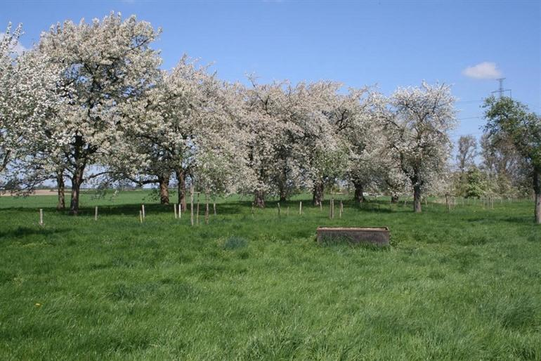

Natuur
Ontspanning
goed gevoel
paradijs
vakantie
van bloesem tot fruit

De Limburgse regio Haspengouw staat vooral bekend om de fruitboomgaarden. Aan het begin van de zomer kan je er de kersen, appels en peren zien hangen, maar Haspengouw wordt vooral vaak bezocht in het voorjaar wanneer de kersen-, appel- en perenbomen hun witte bloesems laten zien. De regio leent zich dan uitstekend voor lange wandelingen en fietstochten en je kan in de regio ook heel wat mooie stadjes en historische bezienswaardigheden bezoeken. Daarnaast zetten ook verschillende fruittelers hun deuren open en er liggen heel wat gezellige bars verstopt in het witte bloemenkleed.
fietsen langs het doorkijk kerkje
De fruitstreek in Haspengouw glooit. Nu en dan stellen heuvelflanken je op de proef, maar de beloning is groot: indrukwekkende panorama’s met kleurrijke boomgaarden, vierkantshoeves en stille kerkdorpen. Het fietsroutenetwerk voert je langs de mooiste plekjes van dit idyllische landschap.